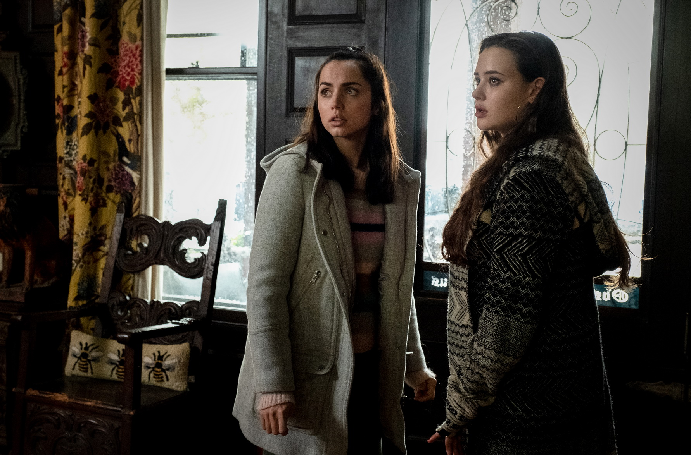

剧情简介
著名推理小说家哈兰在生日聚会后的第二天被发现死亡。警方认为他可能自杀，侦探布兰科却受匿名人士委托重新调查。哈兰的家人表面关系体面，接受询问时却各自隐瞒了与遗产、工作和感情有关的矛盾。护士玛尔塔成为调查中的重要人物，她一说谎就会身体不适。随着时间线逐渐清楚，案件重点也从“谁做的”转向“事情为何会变成这样”。
推荐理由
影片采用古典庄园推理的形式，节奏明快，并加入了许多家庭喜剧。每个角色的服装、房间位置和说话方式都很鲜明，观众很容易分清人物关系。故事较早展示部分真相，让悬念从寻找凶手转为担心计划会在哪里出错。适合喜欢推理，但不想看过于沉重内容的观众。

电影看点
- 宅邸中的刀具装饰和房间布局，会在后面的调查中再次出现。
- 一家人对玛尔塔来自哪个国家说法不同，说明他们并不了解她。
- 影片较早展示重要经过，后半段的重点是侦探怎样还原细节。
观影主题语 · 本站撰写每个人都在讲自己的版本，事实仍然只有一套。